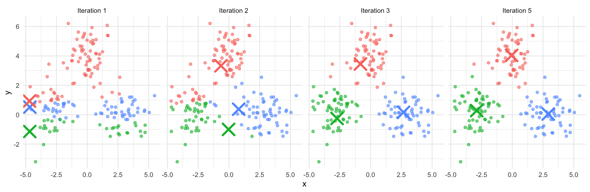
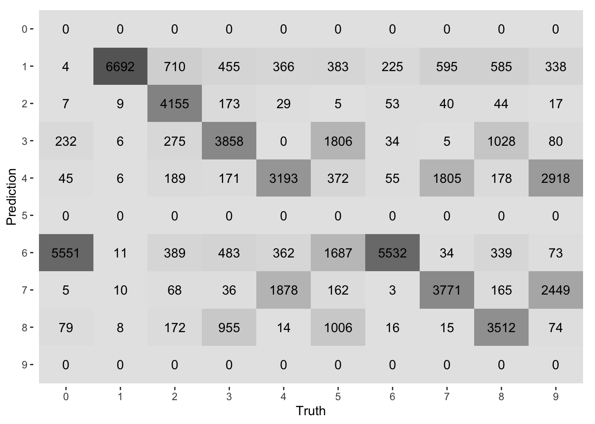
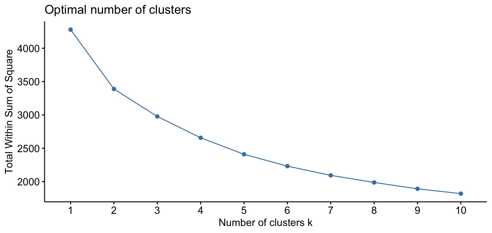
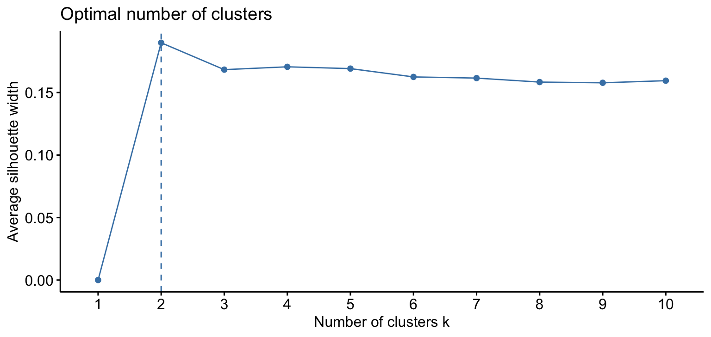
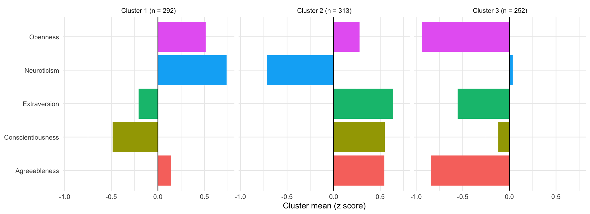
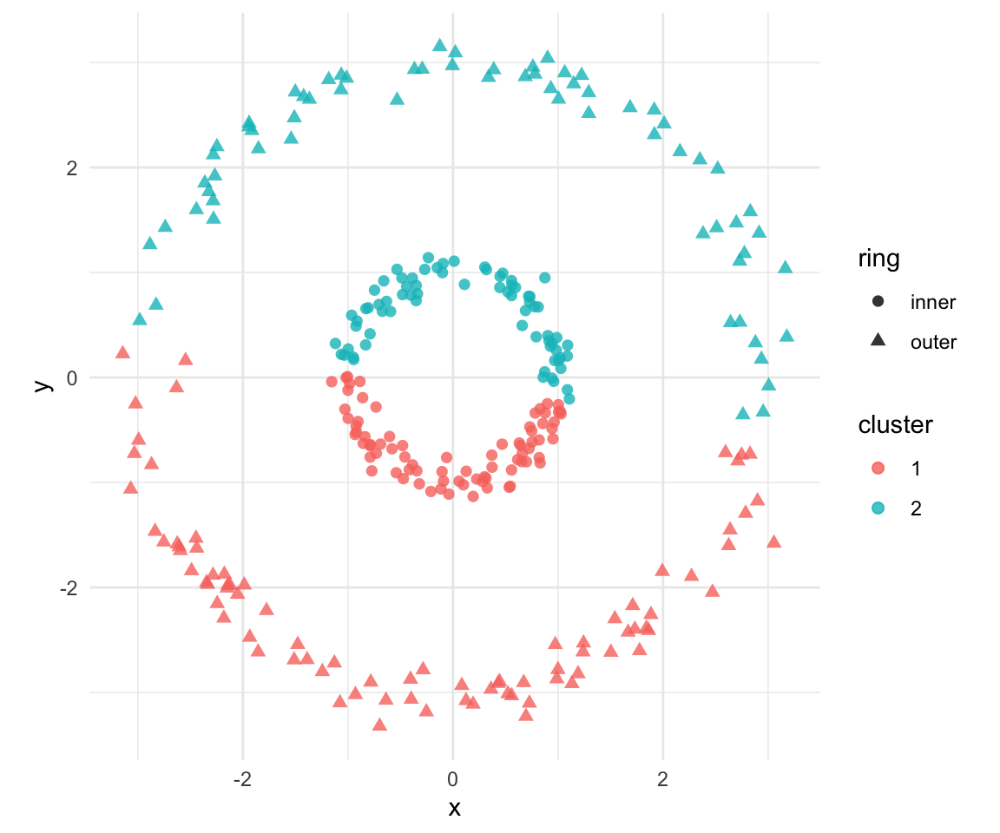

library(dplyr) # data manipulation and the pipe
library(tidyr) # pivot_longer() for the profile plot
library(ggplot2) # plots
library(cluster) # silhouette()
library(factoextra) # fviz_nbclust() and fviz_cluster()K-Means Clustering
Today’s Lecture
In today’s lecture we will cover:
- A new kind of problem: learning without a target
- Person-centered and variable-centered questions
- A brief history of K-means
- Distance, centroids, and within-cluster variation
- The K-means algorithm, step by step and in R
- Random starts and local optima
- Choosing K: the elbow and the silhouette
- K-means on the personality data
- Describing, validating, and reporting clusters
- When K-means fails
Where We Have Been
Every method so far had a target. Linear and logistic regression, the lasso, decision trees, random forests, and boosting all learned to predict \(y\) from \(x_1, x_2, \dots, x_p\).
That is supervised learning. We had an answer key, so we could hold out a test set and score each model on data it had not seen.
Today there is no \(y\).
We have the same kind of data, \(x_1, x_2, \dots, x_p\) measured on \(n\) people, but no outcome to predict. The question changes from “how well can we predict \(y\)” to “what structure is in these variables.”
Unsupervised Learning
Two families of unsupervised methods, and this module covers both.
- Clustering looks for groups of similar observations. The output is a new categorical variable: which group each person belongs to.
- Dimension reduction looks for a small number of new variables that carry most of the information in the original ones. Principal components analysis is the classic example, and it comes in two weeks.
There is no test set error to compute, because there is no answer to compare to. Evaluation rests on internal consistency, stability across samples, and whether the result is useful.
Unsupervised learning is closer to exploratory data analysis than to prediction. A cluster solution is the start of a hypothesis, not a verdict.
Two Kinds of Questions
| Variable-centered | Person-centered | |
|---|---|---|
| Asks | How do the variables relate across the whole sample? | Are there subgroups of people with distinct patterns? |
| Assumes | One model applies to everyone | The population is a mix of types |
| Good for | Describing dimensions, estimating effects, testing mechanisms | Typologies, tailoring interventions, finding hidden subpopulations |
| Risk | Averages over subgroups that differ | Solutions can be unstable and depend on the method |
| Output | New variables built from the old ones, with a loading for each variable | A group label for each person |
| Methods | Regression, PCA, factor analysis | Cluster analysis, mixture models |
Clustering is person-centered: each person gets a label. Dimension reduction, which starts in two weeks with PCA, is variable-centered: it works on the columns, not the rows, and each variable gets a loading. The two approaches are complementary, and the same dataset often deserves both.
Why Psychologists Cluster
- Personality profiles. Are there types of people, not just dimensions? The resilient, overcontrolled, and undercontrolled profiles reported by Robins and colleagues (1996) and Asendorpf and colleagues (2001) came from clustering Big Five scores.
- Symptom subtypes. Do people with the same diagnosis fall into groups with different symptom patterns, and do the groups respond to treatment differently?
- Patterns of daily life. In experience sampling data, are there typical days, or typical people, defined by how mood, sleep, and activity go together?
- Segments. Students by how they engage with a course, patients by how they use services, customers by what they buy.
A clustering algorithm always returns clusters, whether or not real groups exist. Deciding whether the groups are real is the hard part of the analysis.
A Question Before We Go On
Turn to a neighbor and take three minutes.
Pick a construct from your own area: a disorder, a personality trait, a learning outcome, a pattern of behavior.
- Do you think it comes in types, or does it vary along a continuum?
- What would you need to see in data to be convinced the types are real, and not just cuts along a continuum?
- If the types were real, who would use them, and what would they do differently?
Hold onto your answers. The second question comes back in the group activity near the end of the lecture.
A Brief History of K-Means
Independent discoveries, 1956 to 1967
- Hugo Steinhaus (1956) described partitioning points into \(k\) groups to minimize within-group variance.
- Stuart Lloyd (1957) wrote the assign-and-update algorithm in a Bell Labs report on signal quantization. It was not published until 1982.
- James MacQueen (1967) independently proposed a similar procedure and gave it the name k-means.
The algorithm R uses
- John Hartigan and Manchek Wong (1979) published a faster version that moves single points between clusters. It is the default in R’s
kmeans(). - K-means is now in every statistics package and is the baseline that other clustering methods are compared against.
Measuring Similarity
Clustering needs a definition of “close.” K-means uses Euclidean distance, the straight-line distance between two rows of the data:
\[ d(x_i, x_{i'}) = \sqrt{\sum_{j=1}^{p} (x_{ij} - x_{i'j})^2} \]
- A variable measured in big units dominates the distance. Age in years will swamp a 1 to 5 rating scale. Standardize the variables first unless they are already on the same scale.
- Other distances exist: Manhattan, Gower for mixed numeric and categorical data, and correlation-based distances. K-means is tied to Euclidean distance. Hierarchical clustering, next lecture, can use any of them.
Defining a Cluster
A cluster \(C_k\) is a set of observations, summarized by its centroid \(\mu_k\), the mean of its members on every variable.
The within-cluster variation of \(C_k\) is the sum of squared distances from its members to its centroid:
\[ W(C_k) = \sum_{i \in C_k} \| x_i - \mu_k \|^2 \]
The total within-cluster sum of squares adds this over all \(K\) clusters:
\[ SS_{\text{within}} = \sum_{k=1}^{K} W(C_k) \]
K-means looks for the assignment of observations to clusters that makes \(SS_{\text{within}}\) as small as possible. Smaller means tighter clusters. Since \(SS_{\text{total}} = SS_{\text{within}} + SS_{\text{between}}\), the ratio \(SS_{\text{between}} / SS_{\text{total}}\) works like an \(R^2\) for the clustering.
The K-Means Algorithm
- Choose \(K\), the number of clusters.
- Pick \(K\) starting centroids, usually \(K\) randomly chosen observations.
- Assignment step. Assign each observation to its nearest centroid.
- Update step. Move each centroid to the mean of the observations now assigned to it.
- Repeat steps 3 and 4 until no assignment changes.
Neither step can increase \(SS_{\text{within}}\), so the algorithm always settles. It settles at a local minimum, which depends on where it started. We will see what that means in a moment.
Watch It Run
Naftali Harris built an interactive page that runs the algorithm one step at a time:
How to use it in class:
- Pick I’ll Choose for the centroids and Gaussian Mixture for the data, then click to place three centroids badly, all in one corner.
- Alternate Reassign Points and Update Centroids. Each pair of clicks is one iteration. Watch the centroids drift toward the groups and the assignments settle.
- Reset with Randomly chosen centroids and run it a few times. Different starts land in different places, which is the local optimum problem we look at next.
- Try the Smiley Face and Packed Circles data. K-means cannot find those shapes, and we come back to why at the end.
Load the Required Packages
K-Means in a Few Lines of R
Here is the whole algorithm on three made-up groups of points. The starting centroids are deliberately bad: all three come from the same group.
set.seed(559)
true_centers <- data.frame(x = c(-3, 3, 0), y = c(0, 0, 4))
blobs <- do.call(rbind, lapply(1:3, function(k)
data.frame(x = rnorm(60, true_centers$x[k]), y = rnorm(60, true_centers$y[k]))))
X <- as.matrix(blobs)
K <- 3
centroids <- X[order(X[, "x"])[1:K], ] # the three leftmost points
snapshots <- list()
for (it in 1:30) {
# assignment step: squared distance from every point to every centroid
d <- sapply(1:K, function(k) rowSums((X - matrix(centroids[k, ], nrow(X), 2, byrow = TRUE))^2))
cluster <- max.col(-d) # the nearest centroid
snapshots[[it]] <- data.frame(blobs, cluster = factor(cluster), iteration = it,
cx = centroids[cluster, 1], cy = centroids[cluster, 2])
# update step: move each centroid to the mean of its members
new_centroids <- t(sapply(1:K, function(k) colMeans(X[cluster == k, , drop = FALSE])))
if (all(abs(new_centroids - centroids) < 1e-8)) break
centroids <- new_centroids
}
length(snapshots)[1] 5Watching K-Means Converge
Crosses are the centroids at the start of each iteration. Even from a bad start, the centroids spread out and find the three groups in 5 iterations.
shown <- do.call(rbind, snapshots[c(1, 2, 3, length(snapshots))])
shown$iteration <- factor(paste("Iteration", shown$iteration),
levels = unique(paste("Iteration", shown$iteration)))
centers_shown <- unique(shown[, c("iteration", "cluster", "cx", "cy")])
ggplot(shown, aes(x, y, color = cluster)) +
geom_point(alpha = 0.6) +
geom_point(data = centers_shown, aes(cx, cy, color = cluster),
shape = 4, size = 6, stroke = 2) +
facet_wrap(~ iteration, nrow = 1) +
theme_minimal() +
theme(legend.position = "none")
K-Means Finds a Local Optimum
With more clusters, a single random start can settle somewhere poor. Here are nine groups on a grid, clustered with \(K = 9\) from twelve different random starts. The number reported is \(SS_{\text{within}}\), so lower is better.
set.seed(559)
grid9 <- expand.grid(x = c(-5, 0, 5), y = c(-5, 0, 5))
nine <- do.call(rbind, lapply(1:9, function(k)
data.frame(x = rnorm(40, grid9$x[k], 0.8), y = rnorm(40, grid9$y[k], 0.8))))
one_start <- sapply(1:12, function(s) {
set.seed(s)
kmeans(nine, centers = 9, nstart = 1, iter.max = 50)$tot.withinss
})
round(one_start) [1] 842 887 871 1283 1425 436 832 834 843 436 936 436The same data and the same \(K\) give answers that differ by a factor of three, depending only on the random start.
A Bad Solution Looks Fine Until You See It
worst <- which.max(one_start)
set.seed(worst); km_bad <- kmeans(nine, centers = 9, nstart = 1, iter.max = 50)
set.seed(559); km_good <- kmeans(nine, centers = 9, nstart = 25, iter.max = 50)
both <- rbind(
data.frame(nine, cluster = factor(km_bad$cluster),
run = paste0("One random start, SS within = ", round(km_bad$tot.withinss))),
data.frame(nine, cluster = factor(km_good$cluster),
run = paste0("Best of 25 starts, SS within = ", round(km_good$tot.withinss))))
ggplot(both, aes(x, y, color = cluster)) +
geom_point(alpha = 0.7) +
facet_wrap(~ run) +
theme_minimal() +
theme(legend.position = "none")
In the poor solution, some groups have been split in two while neighboring groups share a centroid. Nothing in the printed output warns you.
Random Starts
The fix is simple: run the algorithm many times from different random starts and keep the solution with the smallest \(SS_{\text{within}}\). The nstart argument does this for you.
Use nstart = 25 or more, and set a seed before kmeans() so the solution can be reproduced. The default, nstart = 1, is almost never what you want.
iter.max caps the number of assign-and-update rounds. The default of 10 is sometimes too few and R will warn you. Raising it to 50 costs nothing.
kmeans() in R
| Argument | What it does |
|---|---|
x |
A numeric matrix or data frame. Standardize it first. |
centers |
The number of clusters \(K\), or a matrix of starting centroids. |
nstart |
How many random starts to try. Keep the best. |
iter.max |
Maximum assign-and-update rounds per start. |
The result is a list. The pieces you will use:
| Element | Contents |
|---|---|
cluster |
The cluster each observation was assigned to. |
centers |
A \(K \times p\) matrix of centroids. |
size |
How many observations are in each cluster. |
withinss, tot.withinss |
\(W(C_k)\) for each cluster, and their sum. |
betweenss, totss |
\(SS_{\text{between}}\) and \(SS_{\text{total}}\). |
The Personality Data Again
The same Big Five data as the tree lectures: 1,000 people who answered 50 IPIP items on a 1 to 5 scale. In the supervised lectures we predicted one item from the other 49. Today we ask a person-centered question instead.
Are there types of people in these data, defined by their pattern across the five traits?
Three preparation steps come first, and each one is a decision you would report in a paper.
- Handle missing data. A 0 means the item was skipped.
- Reverse the negatively keyed items and average each trait’s ten items into a trait score.
- Standardize the five trait scores.
Step 1: Prepare the Data
[1] 1000 50[1] 857 50negatively_keyed <- c("EXT2", "EXT4", "EXT6", "EXT8", "EXT10", "EST2", "EST4",
"AGR1", "AGR3", "AGR5", "AGR7", "CSN2", "CSN4", "CSN6", "CSN8",
"OPN2", "OPN4", "OPN6")
data[negatively_keyed] <- 6 - data[negatively_keyed]
traits <- data.frame(
Extraversion = rowMeans(data[grep("^EXT", names(data))]),
Neuroticism = rowMeans(data[grep("^EST", names(data))]),
Agreeableness = rowMeans(data[grep("^AGR", names(data))]),
Conscientiousness = rowMeans(data[grep("^CSN", names(data))]),
Openness = rowMeans(data[grep("^OPN", names(data))]))
round(head(traits, 4), 2) Extraversion Neuroticism Agreeableness Conscientiousness Openness
1 4.6 2.4 3.9 3.2 4.5
2 2.0 2.5 4.4 3.7 3.5
3 2.5 2.6 4.2 3.4 4.1
4 2.6 2.9 3.8 2.5 3.9The EST items are keyed so that a high score means more emotional instability, which is why the trait is labeled Neuroticism.
Standardize Before Clustering
The five traits are all on a 1 to 5 scale, but their spreads differ. Openness and Agreeableness vary less across people than Extraversion does, so without standardizing, Extraversion would get more say in the distances.
Extraversion Neuroticism Agreeableness Conscientiousness
0.89 0.84 0.68 0.71
Openness
0.62 Extraversion Neuroticism Agreeableness Conscientiousness
1 1 1 1
Openness
1 Every variable now has a mean of 0 and a standard deviation of 1, so each trait contributes equally to the Euclidean distance between two people.
Step 2: How Many Clusters?
K-means needs \(K\) before it starts. Two common tools, neither of which is decisive.
The elbow method
Fit K-means for \(K = 1, 2, \dots, 10\) and plot \(SS_{\text{within}}\) against \(K\). It always goes down as \(K\) grows. Look for the point where the drops stop being worth it.

There is no clear elbow here. That is the usual outcome with real data.
The Silhouette
The silhouette asks, for each person \(i\), whether they sit closer to their own cluster than to the next one.
- \(a(i)\): the mean distance from \(i\) to the other members of its own cluster. This measures cohesion.
- \(b(i)\): the mean distance from \(i\) to the members of the nearest other cluster. This measures separation.
\[ s(i) = \frac{b(i) - a(i)}{\max\{a(i), b(i)\}} \]
\(s(i)\) runs from \(-1\) to \(1\). Near 1 means well placed, near 0 means on the border between two clusters, and negative means probably in the wrong one. The average silhouette over everyone summarizes the solution. A rough guide from Kaufman and Rousseeuw: above 0.5 is reasonable structure, 0.25 to 0.5 is weak, and below 0.25 is little evidence of distinct groups.
Silhouette for the Personality Data

The average silhouette peaks at \(K = 2\) at 0.19, and never rises above 0.2. By the rule of thumb, that is weak evidence of distinct types. This is normal for personality traits, which behave more like continuous dimensions than categories.
Choosing K Is a Judgment Call
The elbow plot gives no answer, and the silhouette weakly prefers two clusters. Two clusters here would split people into “high on everything desirable” and “low,” which is not very interesting.
We will fit \(K = 3\), for two reasons:
- Three-cluster solutions are interpretable and match the profiles reported in the personality literature.
- The silhouette for \(K = 3\) is barely different from \(K = 2\), so the statistics do not object.
Then we will check whether the three-cluster solution replicates in random halves of the data. That check is worth more than either index.
Report what the indices said and why you chose what you chose. Readers can disagree with a judgment they can see. They cannot evaluate one that is hidden.
Step 3: Fit the Final Model
[1] 292 313 252[1] 0.3The three clusters explain about 30 percent of the total variation in the five trait scores. The rest is variation within clusters: people in the same cluster are still quite different from each other.
Step 4: Describe the Clusters
The centroids are the cluster means on each standardized trait. A value of 0.5 means that cluster averages half a standard deviation above the sample on that trait.
The Profiles
profiles <- as.data.frame(km$centers) %>%
mutate(cluster = paste0("Cluster ", 1:n(), " (n = ", km$size, ")")) %>%
pivot_longer(-cluster, names_to = "trait", values_to = "z")
ggplot(profiles, aes(trait, z, fill = trait)) +
geom_col() +
geom_hline(yintercept = 0) +
facet_wrap(~ cluster) +
coord_flip() +
theme_minimal() +
theme(legend.position = "none") +
labs(x = NULL, y = "Cluster mean (z score)")
Which cluster gets which number is arbitrary. Run it with a different seed and the labels can switch while the profiles stay the same. You will put names on these three patterns yourselves in the group activity later on.
Seeing the Clusters in Two Dimensions
Five traits cannot be plotted directly. fviz_cluster() projects the data onto its first two principal components, which is a preview of the dimension reduction lectures. The clusters touch, which is what a silhouette below 0.2 looks like.
Step 5: Does the Solution Replicate?
If the three profiles are real, they should show up in any random half of the sample, not just in this particular set of people. A simple check:
- Split the sample into two random halves, A and B.
- Run K-means separately in each half, with the same \(K\) and settings.
- Compare the two solutions. If the same three profiles appear in both halves, the solution replicates.
Cluster numbers are arbitrary, so the first job is to work out which cluster in half B corresponds to which cluster in half A. We pair each half A centroid with the half B centroid that is closest to it.
set.seed(559)
half <- sample(nrow(traits_z), nrow(traits_z) %/% 2)
A <- traits_z[half, ]
B <- traits_z[-half, ]
set.seed(1); km_A <- kmeans(A, centers = 3, nstart = 50, iter.max = 50)
set.seed(2); km_B <- kmeans(B, centers = 3, nstart = 50, iter.max = 50)
# for each half A centroid, the number of the closest half B centroid
match_B <- apply(km_A$centers, 1, function(center_A)
which.min(colSums((t(km_B$centers) - center_A)^2)))
match_B1 2 3
2 1 3 Half A’s cluster 1 matches half B’s cluster 2, and so on. The numbers differ but the pairing is one to one.
The Same Profiles in Both Halves
Here are the centroids from each half, with half B’s rows reordered so that matched clusters sit on the same line.
Half A
Read across each row: the same traits are high and low in both halves. All three patterns appear in both halves of the data, found independently.
Do People Land in the Same Cluster?
A stricter check works at the level of people. For each person in half B, ask two questions: which half A centroid are they closest to, and which half B cluster did K-means put them in? If the two solutions agree, those two labels should match for most people.
# for each row of x, the number of the closest centroid
nearest_centroid <- function(x, centers) {
d <- sapply(1:nrow(centers), function(k)
rowSums((x - matrix(centers[k, ], nrow(x), ncol(x), byrow = TRUE))^2))
max.col(-d)
}
label_from_A <- nearest_centroid(B, km_A$centers) # labels in half A's numbering
label_from_A <- match_B[label_from_A] # translated to half B's numbering
label_from_B <- km_B$cluster
table(label_from_A, label_from_B) label_from_B
label_from_A 1 2 3
1 121 32 16
2 3 111 16
3 4 12 114Each row should pile up on the diagonal, and it does. Overall, 81 percent of people in half B get the same label whichever half’s centroids are used. The profiles are stable, even though they are not sharply separated.
Using the Cluster Variable
After clustering, each person has a new categorical variable: their cluster. That variable can go into any analysis you already know.
- Describe the clusters on variables that were not used to form them: age, sex, education, diagnoses, outcomes.
- Test whether the clusters differ on those variables with ANOVA, chi-square tests, or regression with cluster as a predictor.
- Predict cluster membership from other variables, or use membership to predict an outcome.
Differences on variables that were not used in the clustering are the strongest evidence that a typology means something. Differences on the clustering variables themselves are guaranteed and prove nothing.
These data have no external variables, which is why the replication check had to carry the weight.
Four Ways to Justify a Cluster Solution
- Conceptual. The profiles make sense and connect to theory or prior work.
- Internal criteria. The elbow, the silhouette, and \(SS_{\text{between}} / SS_{\text{total}}\) for the chosen \(K\) against its neighbors.
- Replication. The same profiles appear in random halves, or in a new sample.
- External differentiation. The clusters differ on variables not used to build them.
No single one of these is enough. A paper that reports all four, including the ones that came out weak, is more convincing than one that reports a single index that happened to agree.
Small Group Activity: Interpreting the Clusters
In groups of three or four, take ten minutes on the questions below. Pick one person to report back. Use the centroid table, the profile plot, the silhouette, and the split-half tables as your evidence.
- Name the profiles. Give each of the three clusters a name of two or three words. For each name, point to the centroid values that support it, and say which value, if any, makes you hesitate.
- Defend the number. The silhouette preferred two clusters and we fit three. What would you need to see in the data, or in the literature, to argue for two instead? For four?
- Fix the sentence. A colleague writes, “The three clusters explain 30 percent of personality.” What is wrong with that sentence, and how would you rewrite it?
- Make it testable. Suppose you could add one variable that was not used in the clustering, such as life satisfaction, GPA, or a clinical diagnosis. How would you use it to test whether the typology matters, and what result would convince you that it does not?
- Change the inputs. What would you expect to change if we clustered on the 50 items instead of the 5 trait scores? If we skipped standardizing? Which of those choices is a judgment call and which is a mistake?
When we come back together, each group reports its three names from question 1 and its answer to question 4.
When K-Means Fails
K-means works well when the clusters are roughly round, roughly the same size, and separated in Euclidean distance. Its assumptions are easy to break.
- Shape. Every cluster is a ball around its centroid. Elongated, curved, or nested groups get cut into pieces.
- Size. Large spread-out groups lose their edges to small tight ones.
- Outliers. A few extreme points drag a centroid toward them, or claim a cluster of their own.
- Scale. Unstandardized variables with large units dominate.
- Everyone belongs. Each observation is forced into a cluster, even if it is nothing like the others.
- K is fixed in advance. The algorithm cannot tell you it should have been a different number.
Two Rings
Two rings, one inside the other, are two obvious groups. K-means cannot see them because no centroid can sit at the middle of a ring.
set.seed(559)
n <- 150
t1 <- runif(n, 0, 2 * pi)
t2 <- runif(n, 0, 2 * pi)
rings <- rbind(
data.frame(x = cos(t1) + rnorm(n, 0, 0.10), y = sin(t1) + rnorm(n, 0, 0.10), ring = "inner"),
data.frame(x = 3 * cos(t2) + rnorm(n, 0, 0.15), y = 3 * sin(t2) + rnorm(n, 0, 0.15), ring = "outer"))
set.seed(559)
rings$cluster <- factor(kmeans(rings[, c("x", "y")], centers = 2, nstart = 25)$cluster)
ggplot(rings, aes(x, y, color = cluster, shape = ring)) +
geom_point(size = 2, alpha = 0.8) +
coord_equal() +
theme_minimal()
K-means slices the picture in half. Hierarchical clustering with single linkage, density-based methods such as DBSCAN, and model-based clustering can all handle shapes like this. They are the next two lectures.
Reporting a Cluster Analysis
There is no standard format for reporting cluster analyses in psychology, so be explicit. A reader should be able to reproduce the solution and judge it.
- The variables clustered on, and how they were scaled.
- The distance measure and the algorithm, with the seed and
nstart. - How \(K\) was chosen, including the indices that disagreed.
- Cluster sizes and centroids, with a profile plot. Any names you give the clusters are interpretations, so report the centroids and let the names follow from them.
- Evidence for the solution: replication, and differences on external variables.
- The honest caveat: the algorithm would have produced clusters either way, and the solution is a description of this sample, not a discovery of natural kinds.
Cluster solutions are hypotheses. The test of a typology is whether it replicates in new data and predicts something that matters.
Summary
- Unsupervised learning has no target, so there is no test set score. We judge solutions by stability, interpretability, and usefulness.
- K-means assigns each observation to the nearest of \(K\) centroids and moves the centroids to the means of their members, repeating until nothing changes. It minimizes within-cluster sum of squares.
- It finds a local optimum. Use many random starts and a seed.
- Standardize first. Choose \(K\) with the elbow, the silhouette, and judgment, then check that the solution replicates.
- K-means assumes round clusters of similar size and forces every point into one. When that fails, other methods are needed.
Next time: hierarchical clustering. No \(K\) in advance, any distance measure, and a dendrogram that shows the whole family of solutions at once.